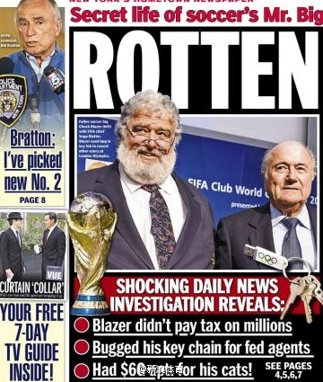
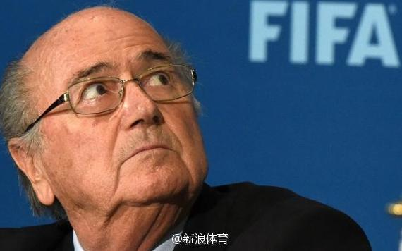

"I never thought I would live to see the day." 纽约时报网站报道下面一个网友的评论。@新浪体育:FIFA数名高官遭突袭逮捕！ 据纽约时报消息，瑞士当局今日配合美国警方对位于苏黎世的某酒店进行“突袭行动”，现场逮捕数名国际足联(FIFA)高级官员，并不包括主席布拉特，但美检方围绕2022年卡塔尔世界杯贿赂丑闻，计划对10余名高官提出腐败指控，恐将使布拉特遭受极大打击。FIFA数名高官遭美国突袭逮捕 
纳什、霍金、图灵分得清楚吗？——纳什和霍金都患有疾病，有离婚的经历，有一部影片主角表演出色；霍金和图灵都是英国人，曾在剑桥大学读书，去年关于他们各排了一部奥斯卡提名影片；纳什和图灵都是普林斯顿博士毕业，都曾因为同性恋被捕，他们做出开创性贡献的领域中都同时有冯诺依曼的开创贡献。
 FIFA数名高官遭美国突袭逮捕
FIFA数名高官遭美国突袭逮捕